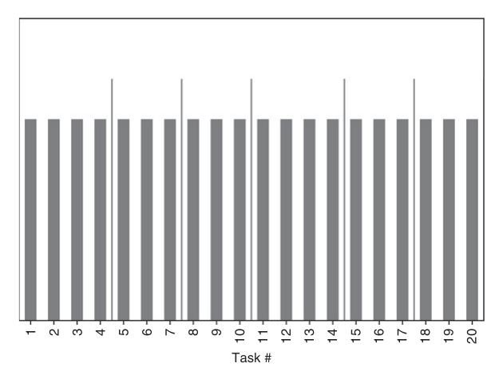
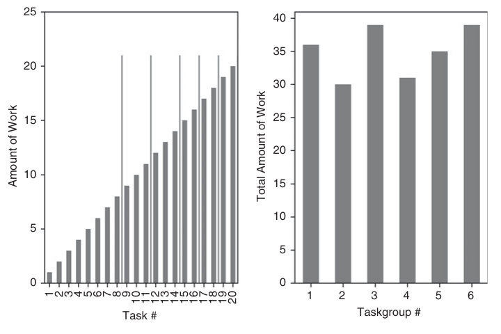

第五部分：高性能计算方法
多进程与向量化
20.1 动机
多进程对机器学习至关重要。机器学习算法的计算量通常很大，必须高效利用所有 CPU、服务器和计算集群。因此，本书前面介绍的大多数函数都按异步多进程方式设计。例如，我们反复使用过一个名为 mpPandasObj 的函数，却一直没有解释它。本章将说明这个函数究竟做什么，并详细讨论如何开发多进程执行引擎。本章程序的结构不依赖具体硬件架构：无论使用单台服务器的多个核心，还是使用高性能计算集群或云平台中多台互联服务器上的核心，都可以采用同一套思路。
20.2 向量化示例
向量化也叫数组编程，是最简单的一类并行化：一次把同一运算应用到整组数值上。举个最小示例，假设要暴力搜索一个三维空间，每一维有两个节点。这个笛卡儿积如果不做向量化，写法会类似代码清单 20.1。如果需要搜索 100 个维度，或者维数要等程序运行时由用户指定，这段代码又该怎样写？
# Cartesian product of dictionary of lists
dict0={'a':['1','2'],'b':['+','*'],'c':['!','@']}
for a in dict0['a']:
for b in dict0['b']:
for c in dict0['c']:
print {'a':a,'b':b,'c':c}向量化方案会把所有显式迭代器，例如 for ...循环，替换为矩阵代数运算、已编译的迭代器或生成器。代码清单 20.2 实现了代码清单 20.1 的向量化版本。它更值得采用，原因有四点：（1）缓慢的嵌套 for ...循环被快速迭代器取代；（2）代码会根据 dict0的维数自动推断网格维数；（3）即使扩展到 100 维，也无须修改代码或写 100 层 for ...循环；（4）Python 可以在底层用 C 或 C++ 执行运算。
# Cartesian product of dictionary of lists
from itertools import izip,product
dict0={'a':['1','2'],'b':['+','*'],'c':['!','@']}
jobs=(dict(izip(dict0,i)) for i in product(*dict0.values()))
for i in jobs:
print i20.3 单线程、多线程与多进程
现代计算机通常有多个 CPU 插槽，每个 CPU 有多个核心，也就是处理器，每个核心又可以运行多个线程。多线程是指在同一个核心的两个或更多线程上并行运行多个应用。它的一个优点是，同一核心上的应用共享内存空间；但这也会带来多个应用同时写入同一片内存的风险。为避免冲突，全局解释器锁（GIL）在任一时刻只允许每个核心上的一个线程取得写权限。在 GIL 约束下，Python 的多线程在每个处理器上只能有一个线程真正执行 Python 代码。因此，Python 主要通过多进程而不是真正的多线程实现并行。不同进程不共享内存空间，不会同时写入同一片内存；代价是进程之间共享对象更困难。
面向单线程编写的 Python 函数，只能利用现代计算机、服务器或集群的一小部分算力。下面看一个简单任务在单线程实现下有多低效。代码清单 20.3 模拟 10,000 条长度为 1,000 的高斯过程，寻找它们最早触及对称双重障碍的时刻；障碍宽度为标准差的 50 倍。
import numpy as np
#---------------------------------------
def main0():
# Path dependency: Sequential implementation
r=np.random.normal(0,.01,size=(1000,10000))
t=barrierTouch(r)
return
#---------------------------------------
def barrierTouch(r,width=.5):
# find the index of the earliest barrier touch
t,p={},np.log((1+r).cumprod(axis=0))
for j in xrange(r.shape[1]):
# go through columns
for i in xrange(r.shape[0]):
# go through rows
if p[i,j]>=width or p[i,j]<=-width:
t[j]=i
continue
return t
#---------------------------------------
if __name__=='__main__':
import timeit
print min(timeit.Timer('main0()',setup='from __main__ import main0').repeat(5,10))对比代码清单 20.4。现在，代码把前述问题拆成 24 个任务，每个处理器负责一个任务，再使用 24 个处理器异步并行执行。如果同一段代码运行在含 5,000 个 CPU 的集群上，耗时大约只有单线程实现的 1/5,000。
import numpy as np
import multiprocessing as mp
#---------------------------------------
def main1():
# Path dependency: Multi-threaded implementation
r,numThreads=np.random.normal(0,.01,size=(1000,10000)),24
parts=np.linspace(0,r.shape[1],min(numThreads,r.shape[1])+1)
parts,jobs=np.ceil(parts).astype(int),[]
for i in xrange(1,len(parts)):
jobs.append(r[:,parts[i-1]:parts[i]]) # parallel jobs
pool,out=mp.Pool(processes=numThreads),[]
outputs=pool.imap_unordered(barrierTouch,jobs)
for out_ in outputs:
out.append(out_) # asynchronous response
pool.close()
pool.join()
return
#---------------------------------------
if __name__=='__main__':
import timeit
print min(timeit.Timer('main1()',setup='from __main__ import main1').repeat(5,10))还可以用同样思路，让多进程执行向量化函数，就像第 3 章中的函数 applyPtSlOnT1那样：多个并行进程分别执行包含向量化 pandas 对象的子程序。这样可以同时获得两层并行。还可以进一步在 HPC 集群上运行这些多进程、向量化代码；集群中的不同节点构成第三层并行。下面几节将说明多进程的工作方式。
20.4 原子任务与分子
准备并行作业时，区分“原子”和“分子”很有帮助。原子是不可再拆分的任务。我们不想在单个线程中依次执行全部原子任务，而是把它们组成多个分子，再交给多个处理器并行处理。每个分子包含一部分原子；回调函数会在一个线程中依次处理这些原子。真正的并行发生在分子这一层。
20.4.1 线性分区
组成分子的最简单方法，是把原子任务列表切成大小相等的子集。子集数量取处理器数量与原子数量二者中的较小值。若要得到 \(N\)个子集，需要找出 \(N+1\)个划分边界索引。代码清单 20.5 演示了这一逻辑。
import numpy as np
#---------------------------------------
def linParts(numAtoms,numThreads):
# partition of atoms with a single loop
parts=np.linspace(0,numAtoms,min(numThreads,numAtoms)+1)
parts=np.ceil(parts).astype(int)
return parts实际中经常遇到含两层嵌套循环的运算，例如计算 SADF 序列（第 17 章）、判断多重障碍是否触及（第 3 章），或根据时间未对齐的序列计算协方差矩阵。这时，线性切分原子任务效率不高，因为各处理器承担的运算量差别很大，总耗时取决于最重的分子。一种不彻底但实用的办法，是把原子任务拆成处理器数量若干倍的作业，并把较重的分子排在作业队列前面。先完成重分子的处理器随后会继续领取轻分子，让所有 CPU 尽可能忙到队列清空。下一节给出更完整的解法。图 20.1 展示如何把 20 个复杂度相同的原子任务线性划分成 6 个分子。
20.4.2 两层嵌套循环的分区
考虑两层嵌套循环，外层循环遍历 \(i=1,\ldots,N\)，内层循环遍历 \(j=1,\ldots,i\)。可以把这些原子任务 \(\{(i,j)\mid 1\le j\le i,\ i=1,\ldots,N\}\)排列成一个包含主对角线的下三角矩阵。运算总数为 \(\frac{1}{2}N(N-1)+N=\frac{1}{2}N(N+1)\)，其中 \(\frac{1}{2}N(N-1)\)个在非对角线上，\(N\)个在对角线上。为了并行执行，我们希望把原子任务按行划分为 \(M\)个子集 \(\{S_m\}_{m=1,\ldots,M}\)，每个子集大约包含 \(\frac{1}{2M}N(N+1)\)个任务。下面的算法确定每个子集，也就是分子，应包含哪些行。

第一个子集 \(S_1\)由最前面的 \(r_1\)行组成，即 \(S_1=\{1,\ldots,r_1\}\)，其中的元素总数为 \(\frac{1}{2}r_1(r_1+1)\)。于是，\(r_1\)必须满足条件
对 \(r_1\)求解，得到正根
第二个子集包含行 \(S_2=\{r_1+1,\ldots,r_2\}\)，其中的元素总数为 \(\frac{1}{2}(r_2+r_1+1)(r_2-r_1)\)。于是，\(r_2\)必须满足条件
对 \(r_2\)求解，得到正根
对后续任意子集 \(S_m=\{r_{m-1}+1,\ldots,r_m\}\)可以重复同样的推导，其元素总数为 \(\frac{1}{2}(r_m+r_{m-1}+1)(r_m-r_{m-1})\)。于是，\(r_m\)必须满足条件
对 \(r_m\)求解，得到正根
不难看出，在下述边界条件下，\(r_m\)可化简为 \(r_1\)，其中 \(r_{m-1}=r_0=0\)。由于行号必须是正整数，上述结果要舍入到最接近的自然数。因此，某些分区的大小可能会略微偏离 \(\frac{1}{2M}N(N+1)\)目标值。代码清单 20.6 实现了这一逻辑。
def nestedParts(numAtoms,numThreads,upperTriang=False):
# partition of atoms with an inner loop
parts,numThreads_=[0],min(numThreads,numAtoms)
for num in xrange(numThreads_):
part=1 + 4*(parts[-1]**2+parts[-1]+numAtoms*(numAtoms+1.)/numThreads_)
part=(-1+part**.5)/2.
parts.append(part)
parts=np.round(parts).astype(int)
if upperTriang:
# the first rows are the heaviest
parts=np.cumsum(np.diff(parts)[::-1])
parts=np.append(np.array([0]),parts)
return parts
如果外层循环遍历 \(i=1,\ldots,N\)，内层循环遍历 \(j=i,\ldots,N\)，可以把这些原子任务 \(\{(i,j)\mid 1\le i\le j,\ j=1,\ldots,N\}\)排列成包含主对角线的上三角矩阵。这种情况下，应把参数 upperTriang=True传给函数 nestedParts。感兴趣的读者可以把它看成装箱问题的一个特例。图 20.2 展示了如何把复杂度递增的原子任务按两层嵌套循环划分为分子。最终得到的 6 个分子工作量相近，尽管某些原子任务的难度可达到另一些的 20 倍。
20.5 多进程执行引擎
为每个需要多进程的函数单独写一层并行封装并不明智。更好的做法是开发一个通用库，无论函数的参数和输出结构如何，都能把未知函数并行化。这正是多进程执行引擎的目标。本节研究其中一种引擎；理解它的逻辑后，读者就可以加入各种定制特性，开发自己的引擎。
20.5.1 准备作业
前面各章经常使用 mpPandasObj。这个函数接收 6 个参数，其中 4 个可选：
func：需要并行执行的回调函数。pdObj：一个元组，包含：- 向回调函数传递分子时所用的参数名。
- 不可再拆分的任务列表，也就是原子；这些原子会被组合成分子。
numThreads：并行使用的线程数，每个线程对应一个处理器。mpBatches：并行批次数，也就是每个核心分配的作业数。linMols：指定采用线性分区还是两层嵌套分区。kargs：关键字参数，供下列回调函数使用：func
代码清单 20.7 展示 mpPandasObj的工作方式。第一步，使用 linParts把原子均匀分到各分子，或使用 nestedParts按下三角结构分配原子。当 mpBatches大于 1 时，分子数量会多于核心数量。假设把任务拆成 10 个分子，其中分子 1 的耗时是其他分子的两倍。若使用 10 个核心，9 个核心将在一半运行时间里闲置，等待第一个核心处理完分子 1。另一种做法是设置 mpBatches=10，把任务拆成 100 个分子。这样即使前 10 个分子的总耗时等于接下来 20 个分子，每个核心仍能得到相近的工作量。在这个例子中，采用 mpBatches=10的运行时间会减半；作为比较基准的设置是 mpBatches=1。
第二步，生成作业列表。每个作业都是一个字典，包含处理一个分子所需的全部信息：回调函数、函数的关键字参数，以及构成该分子的原子子集。第三步，如果 numThreads==1，就顺序执行这些作业，见代码清单 20.8；否则并行执行，见第 20.5.2 节。保留顺序执行选项是为了方便调试，因为程序在多个处理器上运行时很难捕获错误。1代码调试完成后，就应使用 numThreads > 1。第四步，把每个分子的输出拼接成一个列表、Series 或 DataFrame。
def mpPandasObj(func,pdObj,numThreads=24,mpBatches=1,linMols=True,**kargs):
'''
Parallelize jobs, return a DataFrame or Series
+ func: function to be parallelized. Returns a DataFrame
+ pdObj[0]: Name of argument used to pass the molecule
+ pdObj[1]: List of atoms that will be grouped into molecules
+ kargs: any other argument needed by func
Example: df1=mpPandasObj(func,('molecule',df0.index),24,**kargs)
'''
import pandas as pd
if linMols:
parts=linParts(len(pdObj[1]),numThreads*mpBatches)
else:
parts=nestedParts(len(pdObj[1]),numThreads*mpBatches)
jobs=[]
for i in xrange(1,len(parts)):
job={pdObj[0]:pdObj[1][parts[i-1]:parts[i]],'func':func}
job.update(kargs)
jobs.append(job)
if numThreads==1:
out=processJobs_(jobs)
else:
out=processJobs(jobs,numThreads=numThreads)
if isinstance(out[0],pd.DataFrame):
df0=pd.DataFrame()
elif isinstance(out[0],pd.Series):
df0=pd.Series()
else:
return out
for i in out:
df0=df0.append(i)
df0=df0.sort_index()
return df0第 20.5.2 节将介绍代码清单 20.8 中 processJobs_ 函数的多进程版本。
def processJobs_(jobs):
# Run jobs sequentially, for debugging
out=[]
for job in jobs:
out_=expandCall(job)
out.append(out_)
return out20.5.2 异步调用
Python 提供了一个名为 multiprocessing的并行计算库。该库是许多多进程执行引擎的基础，例如 joblib2，后者是许多 sklearn算法使用的执行引擎。3代码清单 20.9 演示如何异步调用 Python 的 multiprocessing库。函数 reportProgress会持续报告已完成作业的百分比。
import multiprocessing as mp
#---------------------------------------
def reportProgress(jobNum,numJobs,time0,task):
# Report progress as asynch jobs are completed
msg=[float(jobNum)/numJobs,(time.time()-time0)/60.]
msg.append(msg[1]*(1/msg[0]-1))
timeStamp=str(dt.datetime.fromtimestamp(time.time()))
msg=timeStamp+' '+str(round(msg[0]*100,2))+'% '+task+' done after '+ \
str(round(msg[1],2))+' minutes. Remaining '+str(round(msg[2],2))+' minutes.'
if jobNum<numJobs:
sys.stderr.write(msg+'\r')
else:
sys.stderr.write(msg+'\n')
return
#---------------------------------------
def processJobs(jobs,task=None,numThreads=24):
# Run in parallel.
# jobs must contain a 'func' callback, for expandCall
if task is None:
task=jobs[0]['func'].__name__
pool=mp.Pool(processes=numThreads)
outputs,out,time0=pool.imap_unordered(expandCall,jobs),[],time.time()
# Process asynchronous output, report progress
for i,out_ in enumerate(outputs,1):
out.append(out_)
reportProgress(i,len(jobs),time0,task)
pool.close()
pool.join() # this is needed to prevent memory leaks
return out20.5.3 展开回调参数
在代码清单 20.9 中，指令 pool.imap_unordered()把 expandCall并行化：列表 jobs中的每个元素，也就是一个分子，都在单独线程中运行。代码清单 20.10 给出了 expandCall；它把作业，也就是分子中的元素，即原子展开，然后执行回调函数。这个小函数正是多进程执行引擎的核心技巧：它把字典转换成任务。理解它的作用后，就能开发自己的执行引擎。
def expandCall(kargs):
# Expand the arguments of a callback function, kargs['func']
func=kargs['func']
del kargs['func']
out=func(** kargs)
return out20.5.4 对象的 Pickle 与 Unpickle
多进程要把方法分配给不同处理器，必须先对方法做 pickle 序列化。问题是，绑定方法默认不能被 pickle。4解决办法是在执行引擎中增加一段功能，告诉相关库如何处理这类对象。代码清单 20.11 给出的指令应放在多进程执行引擎库的顶部。如果想了解为什么需要这段代码，可以阅读 Ascher 等人 [2005]的第 7.5 节。
def _pickle_method(method):
func_name=method.im_func.__name__
obj=method.im_self
cls=method.im_class
return _unpickle_method,(func_name,obj,cls)
#---------------------------------------
def _unpickle_method(func_name,obj,cls):
for cls in cls.mro():
try:
func=cls.__dict__[func_name]
except KeyError:
pass
else:
break
return func.__get__(obj,cls)
#---------------------------------------
import copy_reg,types,multiprocessing as mp
copy_reg.pickle(types.MethodType,_pickle_method,_unpickle_method)20.5.5 输出归并
假设把一项任务拆成 24 个分子，让执行引擎把每个分子交给一个可用核心。代码清单 20.9 中的 processJobs 会接收 24 份输出并存入列表。对于输出不大的问题，这样做很有效。如果要把这些结果合成一个输出，通常先等最后一个分子完成，再处理列表中的各项。只要输出的数量和体积都不大，后处理带来的延迟就不明显。但如果输出占用大量 RAM，而且最终必须合成一个结果，把全部输出先存进列表可能会造成内存错误。更好的做法是：func 异步返回结果时就立即执行归并，而不是等最后一个分子结束后再处理。可以通过改进 processJobs 来解决。具体来说，
我们再传入三个参数，用来规定怎样把各个分子的输出归并为一个结果。代码清单 20.12 给出增强版 processJobs，它新增三个参数：
- redux：执行归并的回调函数。例如，若要把输出 DataFrame 相加，可以设置 redux = pd.DataFrame.add。
- reduxArgs：传给 redux 的关键字参数字典，如无参数则为空。例如，若 redux = pd.DataFrame.join，可以设置 reduxArgs = {'how':'outer'}。
- reduxInPlace：布尔值，表示 redux 是否就地执行。例如，redux = dict.update 和 redux = list.append 都要求 reduxInPlace = True，因为向列表追加元素和更新字典都是就地操作。
def processJobsRedux(jobs,task=None,numThreads=24,redux=None,reduxArgs={},
reduxInPlace=False):
'''
Run in parallel
jobs must contain a 'func' callback, for expandCall
redux prevents wasting memory by reducing output on the fly
'''
if task is None:
task=jobs[0]['func'].__name__
pool=mp.Pool(processes=numThreads)
imap,out,time0=pool.imap_unordered(expandCall,jobs),None,time.time()
# Process asynchronous output, report progress
for i,out_ in enumerate(imap,1):
if out is None:
if redux is None:
out,redux,reduxInPlace=[out_],list.append,True
else:
out=copy.deepcopy(out_)
else:
if reduxInPlace:
redux(out,out_,**reduxArgs)
else:
out=redux(out,out_,**reduxArgs)
reportProgress(i,len(jobs),time0,task)
pool.close()
pool.join() # this is needed to prevent memory leaks
if isinstance(out,(pd.Series,pd.DataFrame)):
out=out.sort_index()
return outprocessJobsRedux 已经知道怎样处理输出后，还可以增强代码清单 20.7 中的 mpPandasObj。代码清单 20.13 的新函数 mpJobList 会把三个输出归并参数传给 processJobsRedux。
这样就不再需要像 mpPandasObj那样处理输出列表，从而节省内存和时间。
def mpJobList(func,argList,numThreads=24,mpBatches=1,linMols=True,redux=None,
reduxArgs={},reduxInPlace=False,**kargs):
if linMols:
parts=linParts(len(argList[1]),numThreads*mpBatches)
else:
parts=nestedParts(len(argList[1]),numThreads*mpBatches)
jobs=[]
for i in xrange(1,len(parts)):
job={argList[0]:argList[1][parts[i-1]:parts[i]],'func':func}
job.update(kargs)
jobs.append(job)
out=processJobsRedux(jobs,redux=redux,reduxArgs=reduxArgs,
reduxInPlace=reduxInPlace,numThreads=numThreads)
return out20.6 多进程示例
本章到目前为止介绍的方法，可以把许多耗时的大规模数学运算加速几个数量级。本节再说明采用多进程的另一个理由：内存管理。
假设已经对如下形式的协方差矩阵做了谱分解：\(Z'Z\)，与第 8 章第 8.4.2 节相同，其中 \(Z\)的大小为 \(T\times N\)。由此得到特征向量矩阵 \(W\)和特征值矩阵 \(\Lambda\)，满足 \(Z'ZW=W\Lambda\)。现在希望提取一组相互正交的主成分，使其解释总方差中由用户指定的比例 \(0\le\tau\le1\)。为此，计算 \(P=Z\tilde W\)，其中 \(\tilde W\)包含前 \(M\le N\)列，取自 \(W\)，满足
计算 \(P=Z\tilde W\)可以并行化，因为
其中 \(Z_b\)是一个稀疏的 \(T\times N\)矩阵，只有 \(T\times N_b\)个元素有值，其余为空；\(\tilde W_b\)是一个 \(N\times M\)矩阵，只有 \(N_b\times M\)个元素有值，其余为空，并且 \(\sum_{b=1}^{B}N_b=N\)。这种稀疏性来自把全部列划分为 \(B\)个列子集，并只向 \(Z_b\)中载入第 \(b\)个列子集。这个稀疏概念乍看有些复杂，但代码清单 20.14 展示了 pandas 如何自然地实现它。函数 getPCs接收 \(\tilde W\)，使用的参数名是 eVec。参数 molecules包含 fileNames中的一部分文件名，每个文件代表 \(Z_b\)。需要把握的关键是：我们把 \(Z_b\)与 \(\tilde W_b\)中由 \(Z_b\)所指定的行切片做点积；分子的结果则实时归并（redux=pd.DataFrame.add）。
pcs=mpJobList(getPCs,('molecules',fileNames),numThreads=24,mpBatches=1,
path=path,eVec=eVec,redux=pd.DataFrame.add)
#--------------------------------------
def getPCs(path,molecules,eVec):
# get principal components by loading one file at a time
pcs=None
for i in molecules:
df0=pd.read_csv(path+i,index_col=0,parse_dates=True)
if pcs is None:
pcs=np.dot(df0.values,eVec.loc[df0.columns].values)
else:
pcs+=np.dot(df0.values,eVec.loc[df0.columns].values)
pcs=pd.DataFrame(pcs,index=df0.index,columns=eVec.columns)
return pcs这种做法有两个优点。第一，由于 getPCs会顺序加载 DataFrame \(Z_b\)，只要 \(B\)足够大，就不会耗尽 RAM。第二，mpJobList会并行执行各个分子，从而加快计算。
在真实的机器学习应用中，\(Z\)往往包含数十亿个数据点。这个例子说明，并行化的价值不只是缩短运行时间。受内存限制，许多问题如果不并行就根本无法求解，即使我们愿意等待更久也无济于事。
脚注
- “海森堡错误”（Heisenbug）得名于 Heisenberg 不确定性原理，指观察或调试时行为会发生改变的错误。多进程错误就是典型例子。 返回正文
- https://pypi.python.org/pypi/joblib。 返回正文
- http://scikit-learn.org/stable/developers/performance.html#multi-core-parallelism-using-joblib-parallel。 返回正文
- http://stackoverflow.com/questions/1816958/cant-pickle-type-instancemethod-when-using-pythons-multiprocessing-pool-ma。 返回正文
参考文献
- Ascher, D., A. Ravenscroft, and A. Martelli (2005): Python Cookbook, 2nd ed. O’Reilly Media.
参考书目
- Gorelick, M. and I. Ozsvald (2008): High Performance Python, 1st ed. O’Reilly Media.
- López de Prado, M. (2017): “Supercomputing for finance: A gentle introduction.” Lecture materials, Cornell University. Available at https://ssrn.com/abstract=2907803.
- McKinney, W. (2012): Python for Data Analysis, 1st ed. O’Reilly Media.
- Palach, J. (2008): Parallel Programming with Python, 1st ed. Packt Publishing.
- Summerfield, M. (2013): Python in Practice: Create Better Programs Using Concurrency, Libraries, and Patterns, 1st ed. Addison-Wesley.
- Zaccone, G. (2015): Python Parallel Programming Cookbook, 1st ed. Packt Publishing.